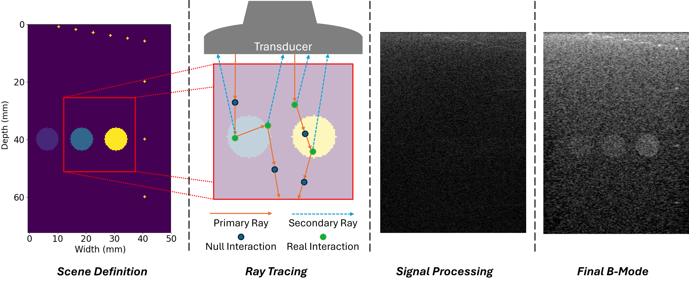

UltraScatter: Ray-Based Simulation of Ultrasound Scattering
Felix Dülmer, Mohammad Farid Azampour, Nassir Navab
Presented at IEEE IUS 2025 (Utrecht, Netherlands) · arXiv:2510.10612
Abstract
Traditional ultrasound simulation methods solve wave equations numerically, achieving high accuracy but at substantial computational cost. Faster alternatives based on convolution with precomputed impulse responses remain relatively slow, often requiring several minutes to generate a full B-mode image. We introduce UltraScatter, a probabilistic ray tracing framework that models ultrasound scattering efficiently and realistically. Tissue is represented as a volumetric field of scattering probability and scattering amplitude, and ray interactions are simulated via free-flight delta tracking. Scattered rays are traced to the transducer, with phase information incorporated through a linear time-of-flight model. Integrated with plane-wave imaging and beamforming, our parallelized ray tracing architecture produces B-mode images within seconds. Validation with phantom data shows realistic speckle and inclusion patterns, positioning UltraScatter as a scalable alternative to wave-based methods.
Overview
Below are a few figures from UltraScatter. For the paper, see arXiv.
Method pipeline
Tissue is represented as volumetric scattering probability/amplitude fields. Ray interactions are sampled via free-flight delta tracking, and scattered rays are traced back to the transducer with phase/time-of-flight modeling.
{kind=link}
Results
UltraScatter produces realistic speckle and inclusion patterns and integrates naturally with plane-wave imaging and beamforming.

Citation
If you find this work useful, please cite:
@article{duelmer2025ultrascatter,
title={UltraScatter: Ray-Based Simulation of Ultrasound Scattering},
author={Duelmer, Felix and Azampour, Mohammad Farid and Navab, Nassir},
booktitle={2025 IEEE International Ultrasonics Symposium (IUS)},
pages={1--4},
year={2025},
organization={IEEE}
}